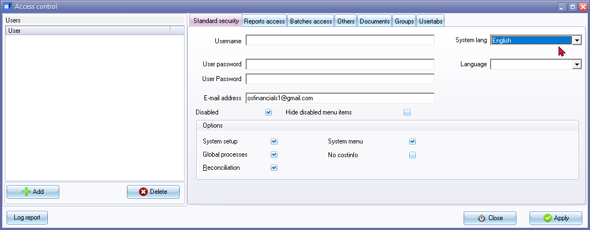

Set language for a Set of Books
When you open a Set of Books, osFinancials will automatically load the language file linked to that Set of Books. This ensures that all screens, reports, and document layout files associated with the Set of Books are presented in the selected language.
You may set or change the language file as the default language for a Set of Books. When opening a Set of Books, it will automatically load the language file. All screens, reports and layout files are translatable via the language files.
You may set the language file for each user. When a user Open a Set of Books, the Set of Books will automatically be opened in the language set for that user.
To set a language for a Set of Books:
- On the Setup ribbon, select Access control.

- System lang - The default language will be displayed in this field. You may set another language for the Set of Books. The selected language will be displayed every time the Set of Books is opened.
- Language - This option is used for the Multi-language Set of Books.
|
|
Multi-Language accounts - Manual - Shop - Licence : Once-off - This plugin makes it possible to translate the ledger and group names in multiple languages. It is already possible to choose different languages for the interface (the buttons). But this plugin makes it possible to do the accounting in different languages. Per user you can select a language, so the user can account in his/her own language. The set of books can be viewed in different languages, therefore it is possible an employee enters information into an English Set of Books and a bookkeeper, auditor, etc. can see the set of books in a set language, e.g. Afrikaans, Dutch, etc. |

- Click on the Apply button to save the changes for this user.
- Once finished, click on the Close button to exit the "Access control" screen.